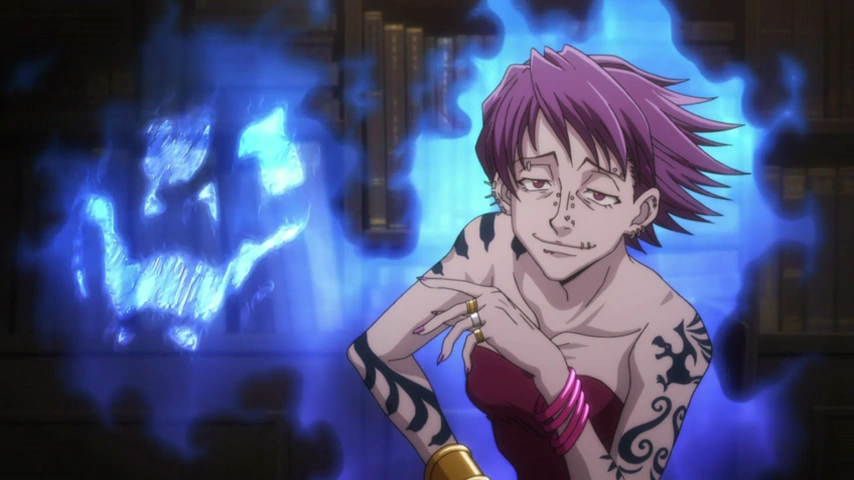
Aura
Aura é a energia vital que circula pelos seres vivos e funciona como a base de todo o uso do Nen. Ela pode ser sentida, controlada e moldada, e sua qualidade depende do treinamento, da concentração e do estado físico do usuário.
Hunter x Hunter é uma obra construída em torno de desafios, mistérios e personagens que transformam disciplina em poder. Entre seus elementos mais marcantes está o Nen, um sistema que une energia, técnica, personalidade e estratégia.
O Nen surge a partir da aura, uma energia vital presente em todos os seres vivos. O que diferencia um usuário comum de um mestre do Nen não é apenas força, mas o domínio do próprio fluxo de energia e a capacidade de dar forma a ele.
Com o Nen, é possível proteger o corpo, ocultar a presença, ampliar a força, perceber o ambiente, controlar objetos e criar habilidades próprias. A beleza desse sistema está no equilíbrio entre potencial, custo e risco: uma técnica mais simples pode ser mais eficiente do que uma técnica incrivelmente poderosa, mas mal pensada.
Este site foi criado para reunir, de forma organizada, os conceitos essenciais do Nen, desde os fundamentos até exemplos de habilidades e personagens que ilustram esse sistema em ação.
Antes de dominar técnicas mais elaboradas, é preciso compreender os pilares do Nen. Esses conceitos formam a base de qualquer habilidade, desde a defesa simples até o uso mais sofisticado de aura.

Aura
Aura é a energia vital que circula pelos seres vivos e funciona como a base de todo o uso do Nen. Ela pode ser sentida, controlada e moldada, e sua qualidade depende do treinamento, da concentração e do estado físico do usuário.
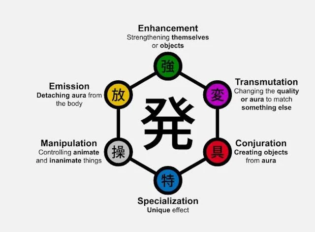
Nen
Nen é a arte de controlar a aura com intenção e precisão. Com ele, o usuário pode se defender, atacar, ocultar sua presença, fortalecer o corpo e criar técnicas únicas que refletem sua personalidade, experiência e estratégia.
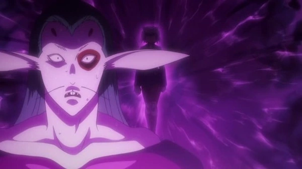
Nódulos de aura
São os pontos por onde a aura é liberada e conduzida pelo corpo. Seu controle influi diretamente na resistência do usuário, na eficiência do fluxo de energia e na forma como a força é aplicada em ataques, defesas e técnicas mais elaboradas.
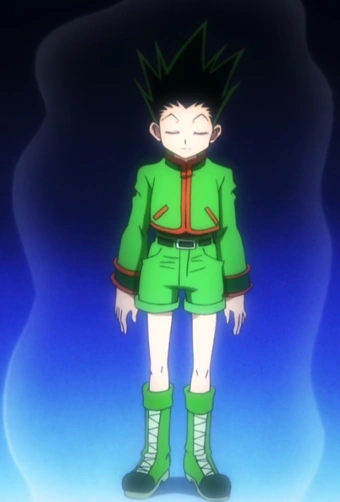
Ten
Ten é a técnica de manter a aura ao redor do corpo de forma constante. Ela cria uma camada de proteção, aumenta a estabilidade do fluxo de energia e ajuda o usuário a permanecer mais firme diante de ataques, pressão ou desgaste mental.
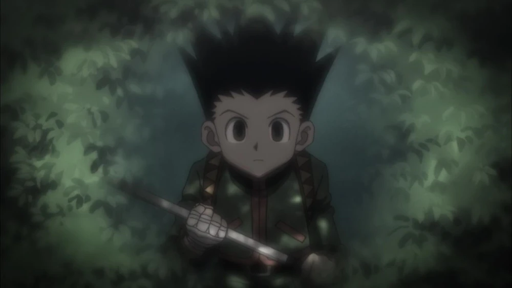
Zetsu
Zetsu fecha a saída de aura e reduz drasticamente a presença do usuário. Ele é muito útil para se esconder, economizar energia, evitar detecção e preparar surpresas, embora deixe o usuário mais vulnerável se não for usado com cautela.
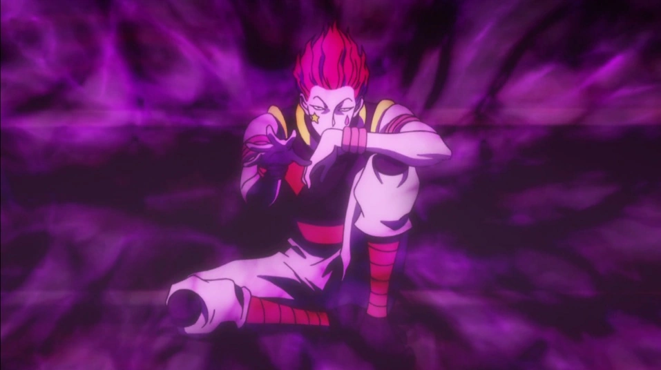
Ren
Ren amplifica a aura em uma onda de presença e força. Ele aumenta a pressão sobre o oponente, reforça os ataques e torna o usuário muito mais impactante em combate, especialmente em situações em que a intimidção e a vantagem psicológica fazem diferença.
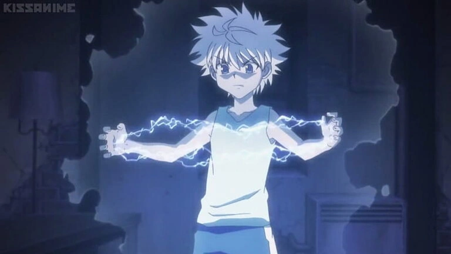
Hatsu
Hatsu é a manifestação individual do Nen, ou seja, a forma pela qual cada usuário transforma sua aura em uma habilidade própria. É por meio dele que a técnica ganha personalidade, função e identidade, muitas vezes refletindo o caráter, os desejos e os objetivos do usuário.
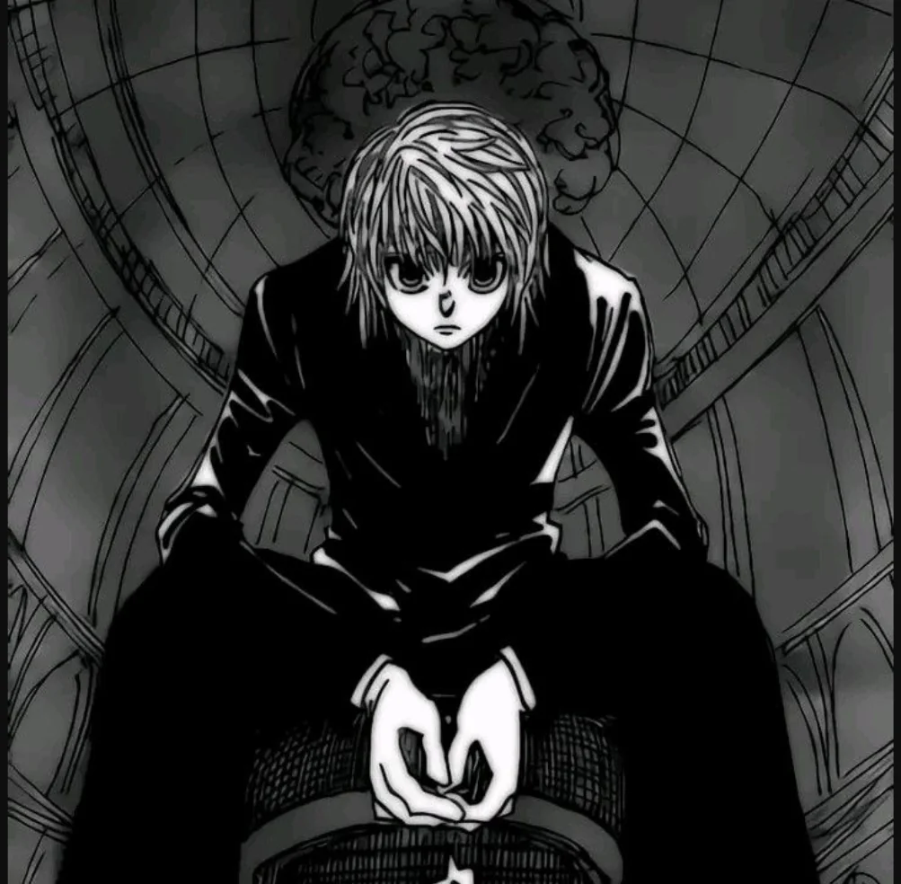
Condições
Condições são regras impostas pelo usuário para dar forma ao poder. Elas podem intensificar uma técnica, aumentar sua eficiência ou torná-la mais criativa, mas também criam limitações, riscos e custos que precisam ser equilibrados com cuidado.
Os tipos de Nen definem a forma como a aura é aplicada. Embora cada pessoa tenha uma afinidade natural, a maestria depende de treino, criatividade e compreensão das próprias limitações.
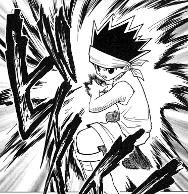
Reforço
Fortalece o corpo ou objetos com aura. Usuários desse tipo costumam ter ataques diretos, grande resistência e aumento de força física.
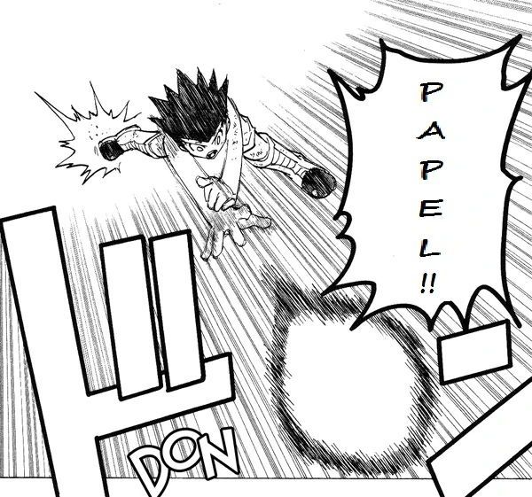
Emissão
Permite separar a aura do corpo e mantê-la ativa à distância. É comum em disparos de energia, ataques lançados e técnicas de alcance maior.
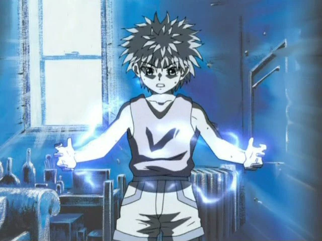
Transmutação
Altera as propriedades da aura. O usuário pode fazer sua aura imitar características como eletricidade, elasticidade ou outras qualidades.
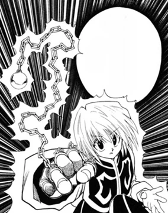
Materialização
Transforma aura em objetos físicos. Esses objetos podem receber funções especiais, principalmente quando têm regras de uso bem definidas.
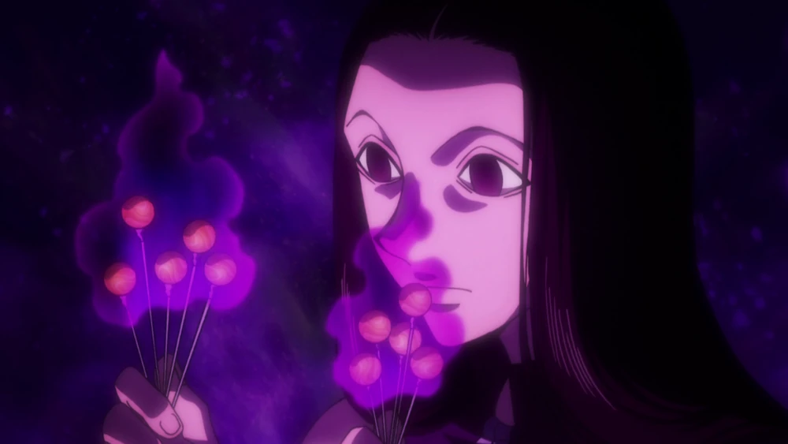
Manipulação
Permite controlar seres, objetos ou ações. Normalmente precisa de uma condição para ativar o controle, como tocar, marcar ou atingir o alvo.
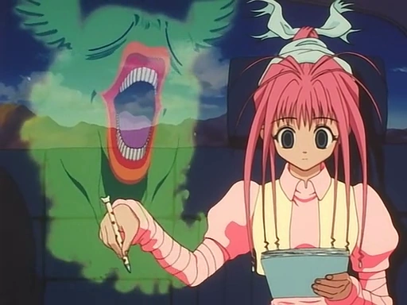
Especialização
Envolve habilidades únicas que não se encaixam bem nas outras categorias. É um tipo raro e costuma ter efeitos muito específicos.
As técnicas de Nen são formas específicas de usar a aura. Algumas são básicas, outras exigem mais controle e experiência. Um bom usuário não depende só do Hatsu, mas também de como usa defesa, percepção, alcance e distribuição de aura.
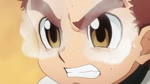
Gyo
Concentra aura em uma parte específica do corpo. É muito usado nos olhos para perceber aura escondida ou analisar uma técnica inimiga.
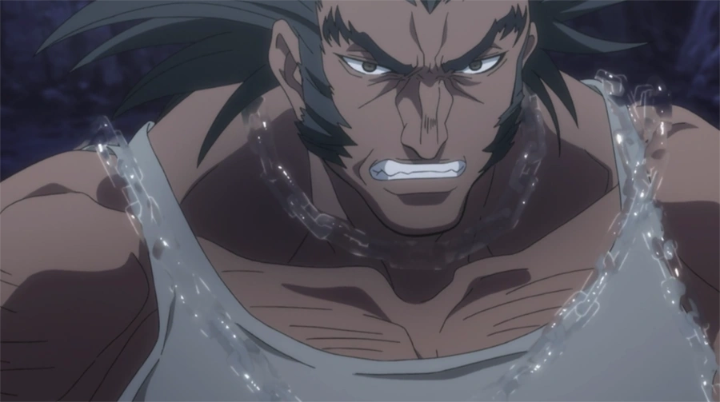
In
Oculta a aura. Pode esconder ataques, objetos materializados ou partes de uma habilidade, dificultando a reação do oponente.
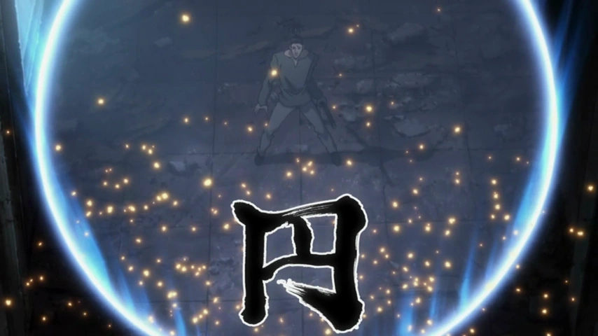
En
Expande a aura ao redor do usuário e cria uma área de percepção. Tudo que entra nessa área pode ser sentido pelo usuário.
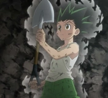
Shu
Envolve objetos com aura. Isso fortalece armas, ferramentas ou itens usados pelo usuário, tornando-os mais resistentes e eficientes.
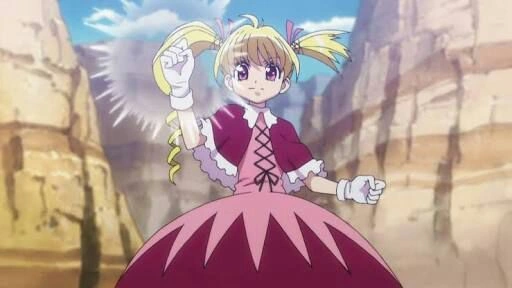
Ko
Concentra quase toda a aura em uma única parte do corpo para um ataque ou defesa muito forte, mas deixa o resto do corpo vulnerável.
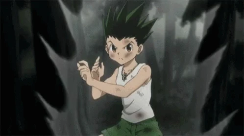
Ken
Mantém uma grande quantidade de aura ao redor do corpo por mais tempo. É útil para defesa contínua durante uma luta.
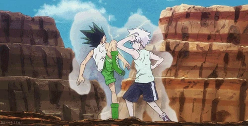
Ryu
Distribui aura entre ataque e defesa conforme a situação. É essencial em combates avançados, pois evita desperdício de energia.
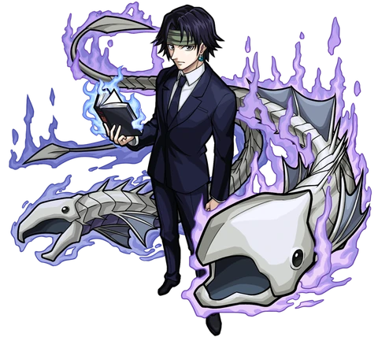
Hatsu avançado
É quando o usuário transforma sua aura em uma habilidade própria, combinando tipo de Nen, estratégia, personalidade, condições e limitações.
Esses personagens ajudam a entender como o Nen funciona na prática. Cada card mostra um usuário, seu foco principal e a ideia geral de sua habilidade. Os links podem ser trocados depois pelas páginas da wiki que você preferir.
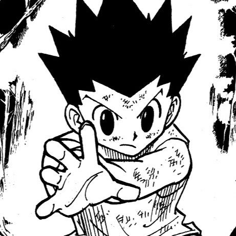
Gon Freecss
Gon representa bem o Reforço. Seu Nen é direto, físico e ligado à determinação, com foco em concentrar aura para ataques simples e fortes.
Ver wiki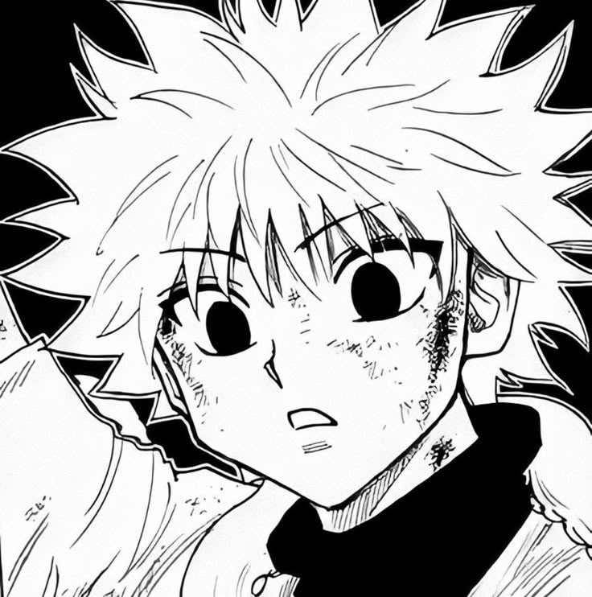
Killua Zoldyck
Killua é ligado à Transmutação. Ele faz sua aura se comportar como eletricidade, aproveitando seu treinamento e resistência a choques.
Ver wiki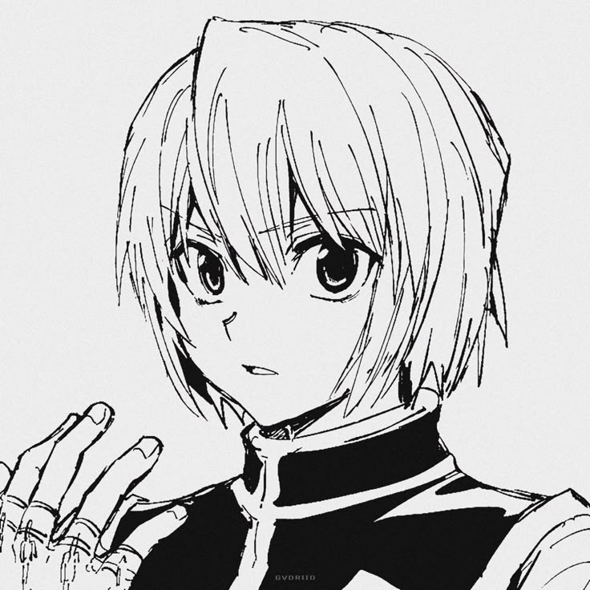
Kurapika
Kurapika usa correntes materializadas com funções específicas. Suas habilidades mostram como condições fortes podem aumentar o poder do Nen.
Ver wiki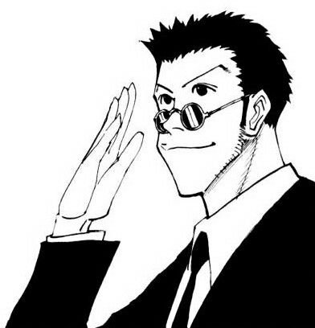
Leorio Paradinight
Leorio é associado à Emissão. Seu uso de aura mostra que o Nen também pode ser pensado de forma prática, criativa e estratégica.
Ver wiki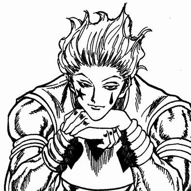
Hisoka Morow
Hisoka usa Transmutação. Sua aura possui propriedades elásticas e adesivas, criando uma habilidade simples, versátil e perigosa.
Ver wiki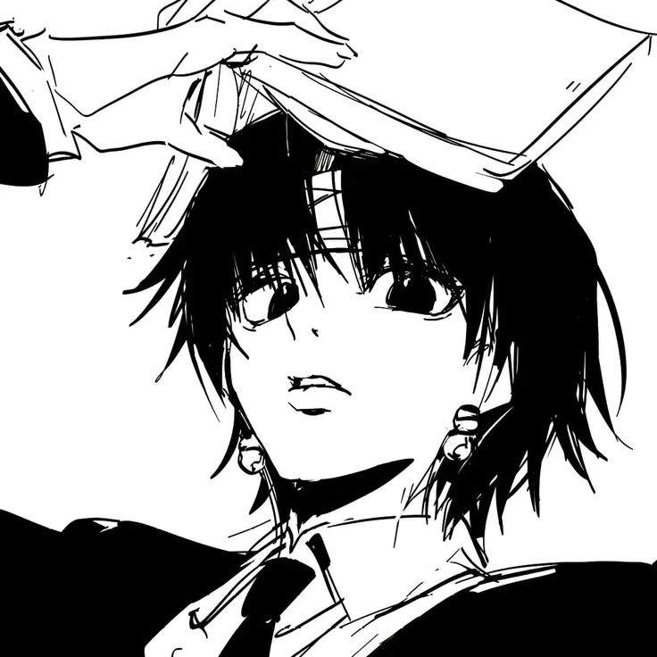
Chrollo Lucilfer
Chrollo é um exemplo de Especialização. Sua habilidade é complexa e envolve usar técnicas de outros usuários sob determinadas regras.
Ver wiki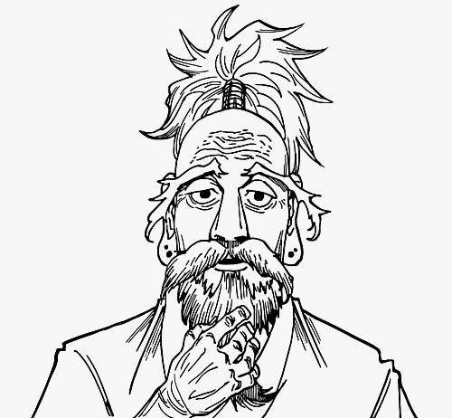
Isaac Netero
Netero mostra o resultado de anos de disciplina e treino. Seu domínio do Nen combina velocidade, força, técnica e precisão.
Ver wiki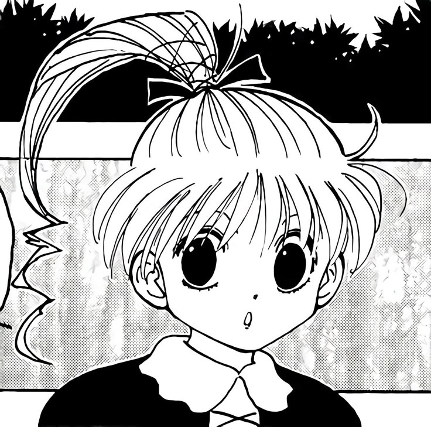
Biscuit Krueger
Biscuit é uma usuária experiente de Nen. Ela mostra que técnica, controle e conhecimento podem ser tão importantes quanto poder bruto.
Ver wiki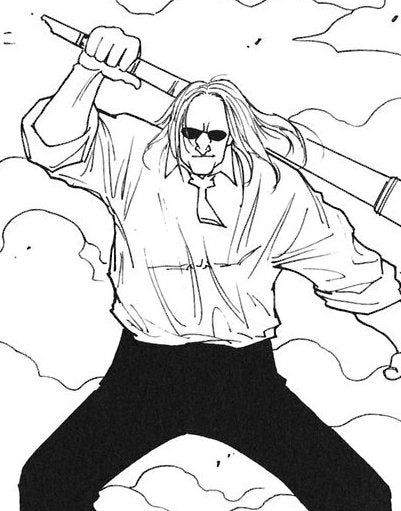
Morel Mackernasey
Morel usa Nen de forma estratégica, com técnicas ligadas a fumaça, distração, suporte e controle de espaço durante o combate.
Ver wiki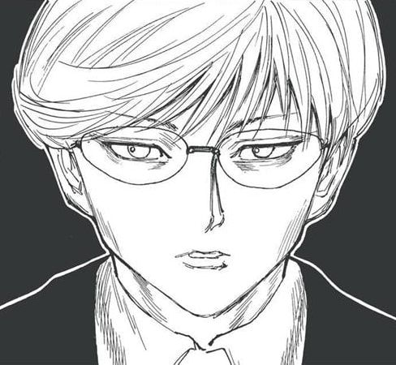
Knov
Knov usa uma habilidade ligada a espaços e deslocamento. Seu caso mostra como o Nen pode ser tático, útil e não apenas ofensivo.
Ver wikiUma boa habilidade de Nen precisa ter lógica. Ela não deve ser apenas forte: precisa combinar com o tipo de Nen, a personalidade do usuário, seu objetivo, custo, alcance, condições e fraquezas.
Escolha entre Reforço, Emissão, Transmutação, Materialização, Manipulação ou Especialização. Esse tipo será a base da habilidade.
Defina a função: ataque, defesa, cura, suporte, fuga, rastreamento, controle, armadilha ou proteção.
Explique como a habilidade é ativada, o que ela faz, quanto tempo dura e qual efeito causa.
Determine se funciona em curta, média ou longa distância. Quanto maior o alcance, maior deve ser o custo ou a limitação.
Toda habilidade gasta energia. Técnicas muito fortes precisam consumir mais aura ou cansar mais o usuário.
Crie uma regra de ativação, como tocar no alvo, usar um objeto, dizer uma frase, esperar um tempo ou cumprir uma preparação.
Adicione uma limitação real: tempo máximo, número de usos, tipo de alvo, lugar específico ou situação necessária.
Defina um ponto fraco, como vulnerabilidade física, demora para ativar, gasto alto de aura ou risco ao próprio usuário.
A habilidade deve refletir quem usa. Em Hunter x Hunter, Nen combina muito com desejos, hábitos e forma de pensar.
Quanto mais poderosa a habilidade for, mais forte precisa ser sua condição, seu custo ou seu risco.
Nome: Corrente do Silêncio
Tipo: Materialização
Função: prender o inimigo por alguns segundos
Condição: o usuário precisa tocar o alvo antes
Restrição: só pode ser usada em uma pessoa por vez
Fraqueza: se o alvo tiver aura muito superior, a corrente quebra mais rápido
Balanceamento: é forte para controle, mas depende de contato físico e não funciona bem contra vários inimigos ao mesmo tempo.